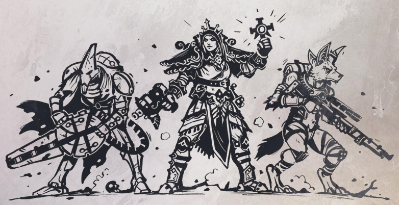
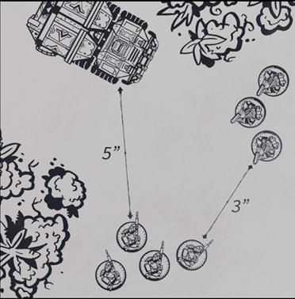
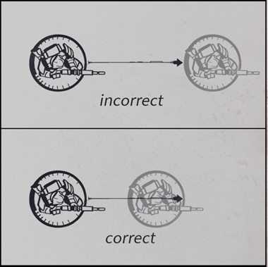

Lost in a galaxy far from our own, humanity struggles to survive amongst the stars.
Earth is but a distant memory for those beneath the grim tapestry of war-torn worlds that form the new constellations of this sector. Looming over them, massive fleets of spaceborne vessels creep over the horizon, blocking out the stars as they slowly approach a Jumpgate.
Beyond this gate, lies the violence and beauty of the wider Sirius Sector. A myriad of systems, none left untouched by the ravages of war. Here, countless battles are constantly fought.
Bullets hiss across once lush worlds stripped bare by the greed of interstellar industry. Serrated claws, honed through genetic engineering, clash against energized plasma blades, as old foes fight bitterly to the death through the wilds of uncharted planets.
Matter is bent and shaped according to the will of powerful minds, whilst forces beyond mortal understanding pour forth from wormholes to wreak havoc and destruction on poor unsuspecting souls.
Vital trade routes are contested along the edge of remote systems by massive battle fleets, while the sector's fate is meted out in dark smoky rooms by political envoys. On the streets of mega cities, zealous preachers and visionaries call out to the masses, hoping to foster their own grim ambitions.
As all this unfolds, dispassionate eyes watch on from a distance, carefully considering the outcome of each clash, as promising commanders and leaders rise and fall throughout the battlefields of the Sirius Sector.
How will you forge your path through this Grimdark Future?
Grimdark Future is a miniature wargame set in a war-torn sci-fi future, which is played using 32mm miniatures. The game mechanics are designed to be easy to learn but hard to master, pinging engaging sci-fi battles for new and experienced players alike. This rulebook is divided into 4 sections:
We recommend that you start off by playing with just a few advanced rules first, and then gradually add more as you get more comfortable with them.
Once you feel like you've gained a good understanding of the game, you can then try out the total conversions, which provide a radically different experience from the base rules.
OPR (www.onepagerules.com) is the home of many free games which are designed to be fast to learn and easy to play.
This project was made by gamers for gamers and it can only exist thanks to the support of our awesome community.
If you want to help us in making more awesome content, you can support us on Patreon: www.patreon.com/onepagerules
Thank you for playing!
Created By: Gaetano Ferrara
Game Design: Gaetano Ferrara
Illustrations: Fran Fernandez, Joao Fiuza, Brandon Gillam
When playing a complex game there are going to be occasions where a situation is not covered by the rules, or a rule does not seem quite right. When that is the case use common sense and personal preference to resolve the situation.
If you and your opponent cannot agree on how to solve a situation, use the following method in the interest of time.
Roll one die. On a result of 1-3 player A decides, and on a result of 4 6 player B decides. This decision then applies for the rest of the match, and once the game is over you can continue to discuss the finer details of the rules.
This game was written to be played with 32mm scale models in mind, which are mounted on round bases. These bases come in various sizes, and we recommend that you always mount miniatures on the bases they come with.
Here are some rough guidelines for model and base sizes:
Note that the base size that you use doesn't matter, as long as you keep base sizes consistent across all models.
In the rules, individual miniatures are referred to as models, whilst groups of one or more models are referred to as units.
This means that when a rule applies to a unit it applies to all miniatures within that unit, whilst if a rule applies to a model it only applies to one individual miniature.
Units come with a variety of statistics that define who they are and what they can do.
To play the game you are going to need some six-sided dice, which we will refer to as D6. Depending on how many models you are playing with, we recommend having at least 10 to 20 dice to keep things fast.
Additionally, we recommend having dice of multiple colors so that you can combine them for faster rolling. Whenever a unit is using multiple weapons, you can use different colors for each weapon, and then roll them all at once.
Sometimes the rules will refer to different types of dice, for example D3, 2D6 and D6+1. There are many types of dice, but the notation remains the same, so just apply the following explanations to all types of weird dice you come across.
Whenever a rule tells you to re-roll a dice result, simply pick up the number of dice you have to re-roll, and roll them again. The result of the second roll is the final result, even if it's worse than the first. A die roll may only be re-rolled once, regardless of how many rules apply to it.
Whenever a rule tells you to roll-off, all players involved in the roll off must roll one die, and then compare their results. The player with the highest result wins the roll-off, and in the event of a tie the players must re-roll until there is a winner.
During the game you will be required to take Quality tests in order to see if a unit succeeds at doing various things such as hitting its targets or passing morale tests.
Whenever a rule states that a unit must take a Quality test, roll one die. If you score the unit's Quality value or higher, then it counts as a success, else it counts as a fail.
Example: A model with Quality 4+ must take three Quality tests. The player rolls three dice and scores a 3, a 4 and a 5. This means that the model gets two successes (the 4 and 5), and one fail (the 3).
Throughout the game there are going to be rules that apply modifiers to your die rolls. These will usually raise or lower the value of a unit's roll results by either +1 or -1, but the exact number may vary.
Whenever a modifier applies to one of your rolls, simply add or subtract the value from the roll and the new value counts as the final result, however a roll of 6 always counts as a success and a roll of 1 always counts as a fail, regardless of how much it is being modified by.
Example: A model with Quality 4+ must take three Quality tests with a -1 modifier. The player rolls three dice and scores a 3, 4 and 5, but because of the modifier the final result is a 2, a 3 and a 4.
All weapons in the game are separated into two categories: ranged weapons and melee weapons. Ranged weapons have a range value and can be used for shooting, whilst melee weapons don't have a range value and can be used in melee.
Weapons profiles are represented like this:
Example: Heavy Rifle (24", A1, AP(1))
To play the game you are going to need a ruler marked in inches, which you may use to measure distances at any time.
Distances are usually measured from a model's base, however if a model has no base, then all distances are measured from its hull or torso, depending on the model.
When measuring the distance between two models you always measure from/to the closest point of their bases.
When measuring the distance between two units you always measure from/to the closest model in each unit.
When measuring how far a model moves always measure so that no part of its base moves further than the total distance.
Note that whilst all examples here show round bases, these movement restrictions apply in the same way to models on bases of different shape or models without a base.
When playing the game, line of sight is used to determine if a model can see another model for any purpose.
Depending on how strict players want to be with line of sight, they need to agree on using one of the following methods before the game begins:
Each one of these methods is more complex than the other, and we recommend playing with basic line of sight for your first match, and only switch to another more complex method if you find it not to be precise enough for your needs.
Note that no matter which method you use, the following rules always apply to line of sight: